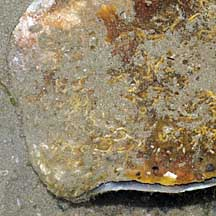
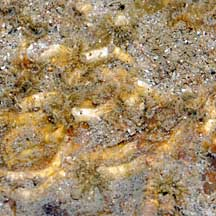
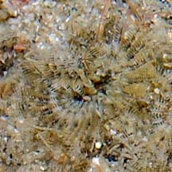
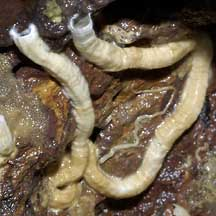
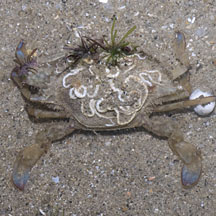

|
|
| worms text index | photo index |
|
worms > Phylum Annelida >
Class Polychaeta
|
| Keelworms Family Serpulidae updated Oct 2016 Where seen? Keelworm tubes are common under stones and on hard surfaces on probably all our shores. Keelworms also encrust ship keels (thus their common name) and in fact, any hard surface that is immersed in the sea, including shells and bodies of hard animals. For this reason, they are often considered pests. What are keelworms? Keelworms are segmented worms belonging to the Family Serpulidae, Class Polychaeta, Phylum Annelida. The polychaetes include bristleworms, and Phylum Annelida includes the more familiar earthworm. Not all tubeworms are polychaetes and not all polychaetes are tubeworms. More about tubeworms in general. Features: Tubes about 0.5cm in diameter and 5-8cm long, usually under stones. The keelworm secretes a hard tube out of calcium carbonate to protect their soft bodies. These hard tubes allow them to settle in tough places such as the underside of a stone. A little knob on a stalk, called the operculum, seals the opening from predators and reduces water loss at low tide. The operculum is actually a modified tentacle. The worm's head is topped by a fan of feathery tentacles (called a radiole) that is extended at high tide. They also breathe through these feathery tentacles. Sometimes confused with vermetid snails that also build tubes on rocks. Tubes made by worms such as keelworms are dull on the inside and made up of two layers. Tube worms have segmented bodies. Tubes made by snails such as vermetids are glossy on the inside because of a deposit of nacre, and made up of three layers. Vermetid snails do not have segmented bodies. Here's more on how to tell apart animals that make hard coiling tubes. What does it eat? The keelworm is a filter feeder, using its feathery tentacles to gather edible bits from the water. Similar worm: The popular 'Chrismas tree fan worms' that are often photographed by divers belong to this family. These worms have large spiral fans and build hard tubes out of calcium in rocks and dead and living corals. The fan worms that we see more often on the intertidal belong to the Family Sabellidae and these build soft tubes out of mucus. Human uses: Keelworms are among the important animals that form the fouling community. These encrusting animals grow on the undersides (keels) of ships, piers and other hard surfaces in the sea. Fouling animals can affect the efficiency of these structures and equipment and thus affect human activities. |
 On a living Window-pane shell. Changi, Jul 08    Tuas, Mar 06 |
|
 Growing on a living small crab. Changi, Oct 11 |
*Species are difficult to positively identify without close examination.
On this website, they are grouped by external features for convenience of display.
| Keelworms on Singapore shores |
| Photos of Keelworms for free download from wildsingapore flickr |
| Distribution in Singapore on this wildsingapore flickr map |
Links
|
|
|